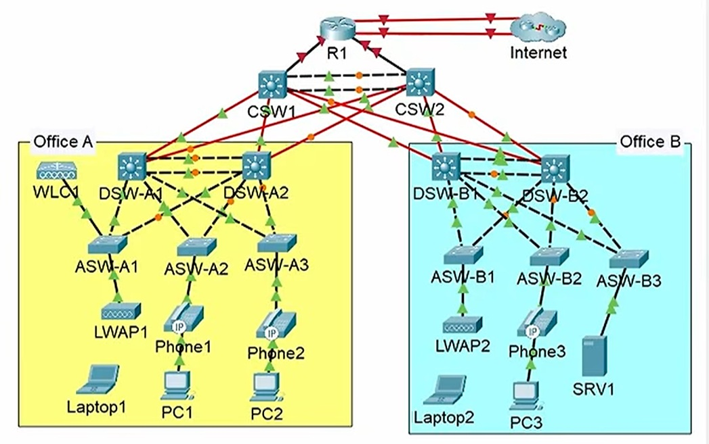
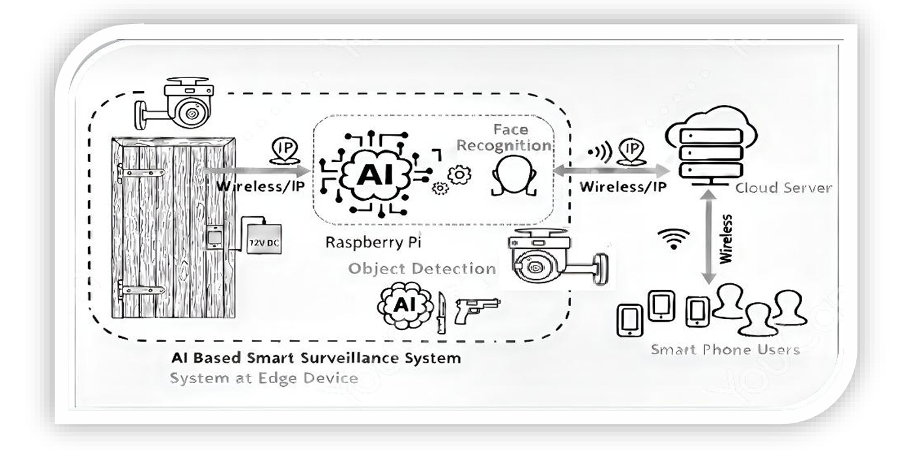
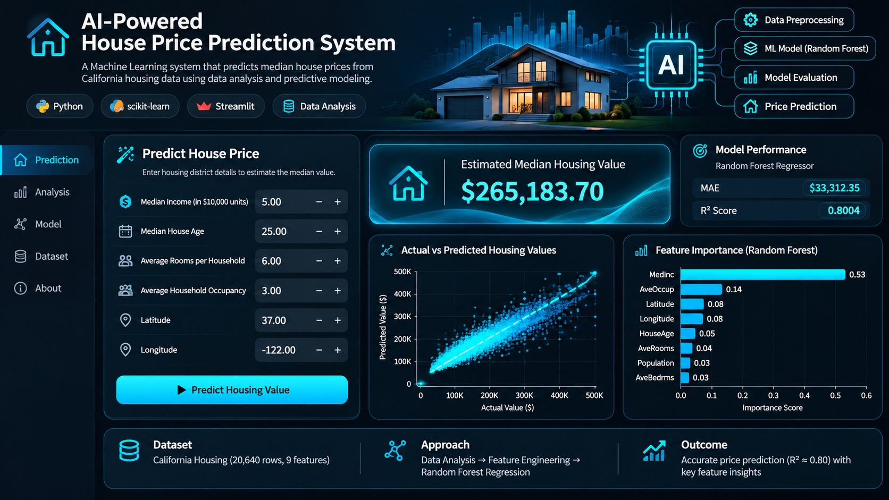

I am Malik Mahad Asif, a Computer Engineering graduate passionate about networking, intelligent systems, and software development. I enjoy building practical solutions and exploring modern technologies.
I am a Computer Engineering graduate from FAST-NUCES Lahore with interests in networking, machine learning, software development, and technical problem-solving. I am focused on learning modern tools and building projects that reflect both engineering fundamentals and emerging technologies.
My goal is to grow as a technical professional by working on meaningful engineering challenges. I am especially interested in systems, communication technologies, intelligent applications, and practical software solutions.
These are the technical domains I am currently focused on and continuously improving.
Understanding network fundamentals, communication systems, protocols, connectivity, and technical infrastructure.
Exploring data-driven systems, intelligent applications, machine learning models, and analytical problem-solving.
Building software solutions using programming, logic, structured development, and modern engineering practices.
Below are technical areas and project categories related to my work. You can later replace these with your real project screenshots and descriptions.

Designed and configured a multi-site enterprise network using Cisco networking technologies, implementing IPv4/IPv6 addressing, static routing, OSPF, VLANs, Spanning Tree Protocol (STP), and EtherChannel. Configured DHCP, DNS, NAT, SSH-based remote management, network security features, and wireless connectivity to support secure, reliable, and scalable network communication.
CCNA Cisco Networking IPv4 / IPv6 OSPF VLANs Network Security
Developed an AI-powered smart surveillance system using Raspberry Pi, integrating Dlib-based CNN face recognition for identity verification and YOLO for real-time weapon detection. The system combines computer vision, edge computing, IP cameras, and cloud connectivity to enable automated security monitoring and remote surveillance.
Python Dlib CNN YOLO Raspberry Pi Computer Vision
A machine learning application developed using Python, Scikit-learn, and Random Forest Regression to estimate housing values. Includes data exploration, model evaluation, feature importance analysis, and an interactive Streamlit web interface.
Python Machine Learning StreamlitFeel free to connect for opportunities, collaboration, or technical discussions.